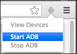
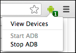

Note: For information on the interaction protocol we use for our remote debugging, please see the Debugger Protocol documentation and chrome.debugger.
The experience of your web content on mobile operates very differently than what users experience on the desktop. The Google Chrome DevTools allow you to inspect, debug, and analyze the on-device experience with the full suite of tools you're used to, meaning you can use the Chrome DevTools on your development machine to debug a page on your mobile device.
Debugging occurs over USB and as long as your mobile device is connected to your development machine, you can view and change HTML, scripts and styles until you get a bug-free page that behaves perfectly on all devices.
To begin remote debugging, you will need:
When debugging a web application served from your development machine, you can also use reverse port forwarding to allow the mobile device to access a site from the development machine over USB. Reverse port forwarding requires Chrome 29 or later on the development machine, Chrome 28 or later on the mobile device.
As of Chrome Beta, the DevTools now support native USB debugging of connected devices. You no longer need to configure ADB or the ADB plugin to see all instances of Chrome and the Chrome-powered WebView on devices connected to your system.
You can find connected devices under about:inspect

or via the Chrome hotdog menu > Tools > Inspect Devices:

Note: This update applies to both desktop Chrome Beta on Mac as well as ChromeOS. Windows users will need to install device drivers to enable communication between their devices.
In the current Chrome stable, you will still need to enable USB debugging
via about:flags. To get this setup:
about:flags/#enable-devtools-experiments and about:flags/#remote-debugging-raw-usb flags (depending on your Chrome version,
you might only need to do the first one).about:inspect and plug in your Android phone (with USB Debugging on).Older versions of Chrome will still require the ADB Chrome extension in order to remotely debug devices. For more information, read remote debugging with the ADB Chrome extension.
Note: Chrome will prevent your screen from going to sleep while remote debugging. Be aware that whilst useful, this makes your device less secure.
If you are using a version of Chrome which doesn't yet support native USB debugging, the ADB Chrome extension can alternatively be used to simplify your remote debugging workflow
The ADB extension includes the Android Debug Bridge (ADB), which lets you debug the device over USB from your development machine. The extension provides the following benefits:
In order to debug over USB, you need to setup your Android device for development. Enable USB debugging on your device then system to detect your device as mentioned in the guide.
To enable USB debugging:
If you are developing on Windows, you need to install the appropriate USB driver for your device. See OEM USB Drivers on the Android Developers site.
For more information see Setting up a Device for Development on the Android Developers site.
When the ADB extension is installed, a gray Android menu icon appears beside the Chrome menu.
To start debugging:
Click the Android icon, then click Start ADB.

Once ADB has started, the menu icon turns green and displays the number of currently connected devices, if any.

If you don't see any connected devices:
adb devices
command. If not, check that you have USB debugging enabled on your
device.
For example, inspect an element in the page you have selected and the element highlights in Chrome mobile on your device in real time.

Similarly, editing scripts or executing commands from the DevTools console affects the page being inspected on your device. You can also also use all of the other panels, such as Timeline and Profiles.
Using the Screencasting you are able to bring the experience of your device onto your machine. This allows you to keep your attention on one screen instead of switching back and forth between screen and the DevTools.
Clicking on the screencast icon  in the toolbar opens up a panel on your computer displaying your device's screen. As you navigate, click, scroll, the screencast display will provide a live view of what's on your device.
in the toolbar opens up a panel on your computer displaying your device's screen. As you navigate, click, scroll, the screencast display will provide a live view of what's on your device.
While you are screencasting your device, you also have full control over the Back and Forward buttons, and you have the ability to type into the URL bar directly.

You can interact with the screencast of your device in a number of ways.

Note: The screencast feature repeatedly snaps screenshots on the device to give you the live view, but this does have a performance overhead. Disable screencast if you're testing framerate-sensitive situations.
Starting Android 4.4 (KitKat), you can use the DevTools to debug the contents of Android WebViews inside native Android applications. Debugging WebViews requires:
The Enable USB web debugging setting in Chrome doesn't affect WebViews. To
debug the contents of your WebView, you need to enable it programmatically from within your application by calling
setWebContentsDebuggingEnabled, a static method on the WebView class.
if(Build.VERSION.SDK_INT >= Build.VERSION_CODES.KITKAT) {
WebView.setWebContentsDebuggingEnabled(true);
}
This setting applies to all of the application's WebViews. Note that web debugging is not affected
by the state of the debuggable flag in the application's manifest. If you want to enable web debugging only
when debuggable is true, test the flag at runtime.
if(Build.VERSION.SDK_INT >= Build.VERSION_CODES.KITKAT) {
if ( 0 != ( getApplcationInfo().flags &= ApplicationInfo.FLAG_DEBUGGABLE ) ) {
WebView.setWebContentsDebuggingEnabled(true);
}
}
To debug a WebView in DevTools:
Connect your mobile device to the development machine using a USB cable.
When connecting your device to your development machine, you may see an alert on the device requesting permission for USB debugging from this computer.
To avoid seeing this alert each time you debug, check Always allow from this computer and click OK.
inspect link
next to one of the tabs to inspect the WebView's contents in DevTools.
Commonly you have a web server running on your local development machine, and you want to connect to that site from your device. If the mobile device and the development machine are on the same network, this is straightforward. But this may be difficult in some cases, like on a restricted corporate network.
Chrome for Android supports port fowarding making this workflow very simple to do. It works by creating a listening TCP port on your mobile device that maps to a particular TCP port on your development machine. The traffic through the forwarded port travels over USB, so it doesn't depend on the mobile device's network configuration.
To use this feature you need:
This procedure assumes that you already have remote debugging configured as described in Remote debugging with the ADB Chrome extension or Remote Debugging on Android (Legacy Workflow).
On about:inspect you should now see a green circle indicating your port forwarding is succssful. Now, enter in your local URL into the Open tab field and hit Go to open it on your device's browser.
You should see the content being served by your development machine.